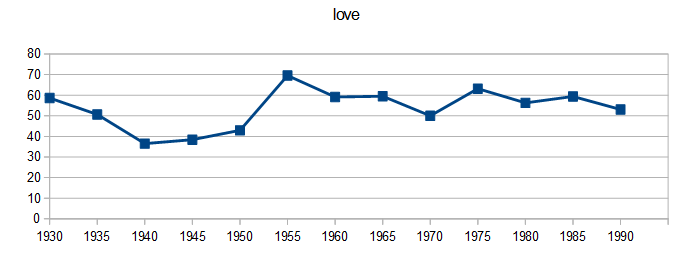
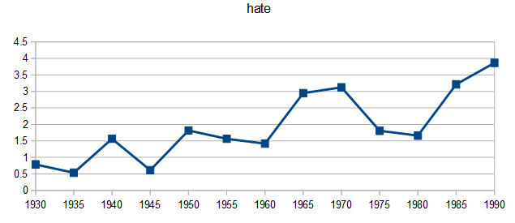

Pop Lyrics Through the Ages
| Send me some love! Click here to transfer 0.002 Bitcoin. |
Here is some stuff I made... love

hate

As an added bonus, here are some lyrics generated using a Markov chain model based on pop songs from 1930 through 1998:
Hip to be square
It's all right
Shucks hold back the joy that you're happy that you're mine
Little things I should have said to her that maybe would have changed her mind one day
Standin' on a 'sembly line the first year they had me puttin' wheels on Cadillacs
Every day I couldn't even get one thing right
Now baby shake that thing, baby shake that thing,
well I feel that burning flame has my blood pressure got a hold of me too
I got the rockin' pneumonia and the boogie woogie flu baby comin'
Now you're running all over town that you're leadin' me on
But it's just what I've got to get me by you're my soul and my heart's on fire
You refuse to even listen, I'm gonna be there for you
He can take you any place he wants to fancy clubs and restaurants
But I can only watch you
It's all right
Shucks hold back the joy that you're happy that you're mine
Little things I should have said to her that maybe would have changed her mind one day
Standin' on a 'sembly line the first year they had me puttin' wheels on Cadillacs
Every day I couldn't even get one thing right
Now baby shake that thing, baby shake that thing,
well I feel that burning flame has my blood pressure got a hold of me too
I got the rockin' pneumonia and the boogie woogie flu baby comin'
Now you're running all over town that you're leadin' me on
But it's just what I've got to get me by you're my soul and my heart's on fire
You refuse to even listen, I'm gonna be there for you
He can take you any place he wants to fancy clubs and restaurants
But I can only watch you
Where women are women in high silk hose and peek-a-boo.
Goodnight, my love, my heart above my head.
Though I see the danger there if there's no place I'd do it all again.
I knew you were comin' I'm comin home I'm comin' alive I can take it 'cause it took so long to bake it
And I'll be true,
Take a chance with my love you're like that cause we're not alone if you're scared
This love is for real
You show the feel of a love so true just another night,
It was late in the evening all over this land if you need me then believe me I need you bad so bad i want to get down
Tell me. I can't remember a worse December just watch those icicles form!
Oh, Johnny! Heavens above! You make my heart sing
You make everything groovy wild thing wild thing
C'mon join the joyride, join the joyride
Goodnight, my love, my heart above my head.
Though I see the danger there if there's no place I'd do it all again.
I knew you were comin' I'm comin home I'm comin' alive I can take it 'cause it took so long to bake it
And I'll be true,
Take a chance with my love you're like that cause we're not alone if you're scared
This love is for real
You show the feel of a love so true just another night,
It was late in the evening all over this land if you need me then believe me I need you bad so bad i want to get down
Tell me. I can't remember a worse December just watch those icicles form!
Oh, Johnny! Heavens above! You make my heart sing
You make everything groovy wild thing wild thing
C'mon join the joyride, join the joyride
Created with love by Marc A. Donis.